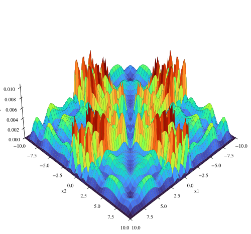

Proyecto Final Física Computacional 2. ¿Dónde están las partículas cuando la caja está caliente?
Table of Contents
1. Resumen
Este proyecto aborda el problema de localizar partículas, como fermiones y bosones (con y sin espín), dentro de una barrera de potencial finita de ancho \(a\), contenida a su vez dentro de una barrera de potencial infinita de ancho \(b\), donde \(b >> a\). El sistema es influenciado por un reservorio térmico que lo calienta. Además, se estudió el caso límite cuando \(a = b\), obteniendo resultados que coinciden con los reportados en la literatura.
2. 1. Introducción
Estudiamos una partícula cuántica sujeta a un potencial que generaliza al bien conocido caso del pozo infinito. El sistema cuántico propuesto constituye una manera de cuantizar la región de energías continuas del también caracterizado caso del pozo finito; esto resulta de especial importancia en los estudios que se desean llevar a cabo en el presente trabajo, pues se trata de emplear el formalismo de la colectividad canónica de Gibbs para dotar al espacio de estados energéticos del pozo de una densidad de probabilidad estadísitica que haga referencia al contacto con un reservorio de calor; dado que se ha cuantizado el continuo, es entonces posible asignar de manera unívoca una función de onda a cada nivel energético del sistema. Por tanto, es lícito preguntarse por el valor esperado del ahora bien definido observable que, en cada estado \(n\) de energía, evalúa el valor de la densidad de probabilidad posicional (cuántica) \(|\phi_n(x)|^2\), para un \(x\) fijo dentro del pozo. La colección de estos valores esperados para todo \(x\) da lugar a una función que interpretamos como la densidad de probabilidad termalizada del sistema.
En este trabajo, resolvemos e indagamos los aspectos cuánticos y las propiedades térmicas del sistema para una sola partícula y para bosones y fermiones; hallamos de forma sistemática los niveles energéticos y sus correspondientes funciones de onda teniendo en cuenta el formalismo cuántico [2,3] y hallamos los valores esperados a la luz de la teoría estadística del calor [4]. Como resultado particular de nuestro tratamiento, se obtienen los mismos resultados que ya han sido reportados en la literatura para un pozo infinito usual [1].
!apt-get install libgsl-dev !apt-get install libeigen3-dev
zsh:1: command not found: apt-get zsh:1: command not found: apt-get
!pip install tabulate
zsh:1: command not found: pip
!pip install pandas
zsh:1: command not found: pip
!pip install sympy numpy scipy
zsh:1: command not found: pip
#Usual packages
%config InlineBackend.figure_format = 'svg'
from IPython.core.interactiveshell import InteractiveShell
from itertools import combinations_with_replacement
from scipy.interpolate import interp1d
from scipy.optimize import ridder
from scipy.integrate import quad
import matplotlib.pyplot as plt
import pandas as pd
import sympy as sym
import numpy as np
import subprocess
import itertools
from tabulate import tabulate
InteractiveShell.ast_node_interactivity = "all"
plt.rcParams.update({
'mathtext.fontset': 'stix',
'font.family': 'STIXGeneral'
})
# A function to easily display datasets in orgmode
def print_table(dataframe):
# Display a given dataset in a table format
table = tabulate(dataframe, headers='keys', tablefmt='orgtbl')
print(table)
3. 2. Marco Teórico
3.1. 2.1 Cuantización de la energia
Sea el potencial dado por \[ V(x) = \begin{cases} 0, \quad 0 < x < a,\\ V_0, \quad a < x < b,\\ \infty, \quad x > b, \end{cases} \] donde \(V_0\) es una constante y el potencial es par, es decir, \(V(-x) = V(x)\).
Siguiendo la metodología de [3], dividimos el problema en tres regiones, la función de onda en cada una de ellas, para \(j = 0,1,2\), se escribe como \[ \psi_j = A_j e^{ik_j x} + B_j e^{-ik_j x}, \] donde \[ k_j = \sqrt{\frac{2m(E - V_j)}{\hbar^2}} \] y \(A_j\), \(B_j\) son constantes de integración.
Para relacionar las ondas entre las regiones \(0\) y \(1\), imponemos la continuidad de la función de onda y su derivada \((C^1)\) en \(x=a\). Esto nos permite definir la matriz de transferencia como \[ M_{01}(-a) = \frac{1}{2k_0} \begin{pmatrix} s_{01} e^{id_{01}a} & d_{01} e^{is_{01}a} \\ d_{01} e^{-is_{01}a} & s_{01}e^{-id_{01}a} \end{pmatrix}, \] junto con el vector de coeficientes \[ C_j = \begin{pmatrix} A_j \\ B_j \end{pmatrix}, \quad j = 0,1,2. \] Aquí, \[ s_{01} = k_0 + k_1, \quad d_{01} = k_0 - k_1. \] Así, las ondas a cada lado del salto de potencial están relacionadas por \[ C_0 = M_{01}(-a)C_1. \]
De manera análoga, para la interfaz entre las regiones \(1\) y \(2\), se obtiene la relación \[ C_1 = M_{12}(a)C_2, \] donde \[ M_{12}(a) = \frac{1}{2k_0} \begin{pmatrix} s_{12} e^{-id_{12}a} & d_{12} e^{-is_{12}a} \\ d_{12} e^{is_{12}a} & s_{12}e^{id_{12}a} \end{pmatrix}. \]
Combinando estas relaciones, se obtiene \[ C_0 = M_{01}(-a)M_{12}(a)C_2. \]
Dado que la función de onda debe anularse en los extremos, \(\psi_0(-b) = 0\) y \(\psi_2(b) = 0\), se deduce que \[ A_0 = - B_0 e^{2ik_0b}, \quad A_2 = - B_2 e^{-2ik_0b}. \]
Sustituyendo en la ecuación anterior, se obtiene \[ \begin{pmatrix} B_0 e^{2ik_0b} \\ B_0 \end{pmatrix} = M_{01}(-a) M_{12}(a) \begin{pmatrix} B_2 e^{-2ik_0b} \\ B_2 \end{pmatrix}. \]
De esta ecuación se obtienen dos relaciones, las cuales se dividen entre sí para obtener la ecuación trascendental. Debido a la extensión de los cálculos, esta ecuación será implementada en Python utilizando manipulación simbólica para realizar las operaciones correspondientes.
# Finding the transcendental equation...
# Define symbolic variables
k_0, k_1 = sym.symbols('k_0 k_1', real=True)
a, b = sym.symbols('a b', real=True)
i = sym.I # Imaginary unit
# Define expressions
s01 = k_0 + k_1
d01 = k_0 - k_1
s12 = k_1 + k_0
d12 = k_1 - k_0
# Define matrices
M_01 = sym.Matrix([[s01 * sym.exp(i * d01 * a), d01 * sym.exp(i * s01 * a)],
[d01 * sym.exp(-i * s01 * a), s01 * sym.exp(-i * d01 * a)]])
M_12 = sym.Matrix([[s12 * sym.exp(-i * d12 * a), d12 * sym.exp(-i * s12 * a)],
[d12 * sym.exp(i * s12 * a), s12 * sym.exp(i * d12 * a)]])
# Multiply the matrices
M = (M_01 @ M_12).expand()
# Vector multiplication
vect = M @ sym.Matrix([-sym.exp(-2 * i * k_0 * b), 1])
x = sym.trigsimp(vect[0].expand().rewrite(sym.sin), method='fu').simplify()
x = sym.collect(x, [k_1 ** 2, k_0 ** 2,k_0*k_1,2*k_1, 2*k_0])
y = sym.trigsimp(vect[1].rewrite(sym.cos), method='fu')
y = y.simplify()
y = sym.collect(y, [k_1 ** 2, k_0 ** 2,k_0*k_1])
function = -sym.exp(2 * i * k_0 * b) * y - x
function = function.rewrite(sym.sin)
function1 = sym.trigsimp(sym.expand_trig(function).expand(), method='fu')
function1 = sym.collect(function1, [2*i*k_1 ** 2, 2*i*k_0 ** 2,2*i*k_0*k_1])
function1
\(\displaystyle 2 i k_{0}^{2} \left(- 2 \sin{\left(2 a k_{1} \right)} - \sin{\left(- 2 a k_{0} + 2 a k_{1} + 2 b k_{0} \right)} - \sin{\left(2 a k_{0} + 2 a k_{1} - 2 b k_{0} \right)}\right) + 2 i k_{0} k_{1} \left(- 2 \sin{\left(- 2 a k_{0} + 2 a k_{1} + 2 b k_{0} \right)} + 2 \sin{\left(2 a k_{0} + 2 a k_{1} - 2 b k_{0} \right)}\right) + 2 i k_{1}^{2} \left(2 \sin{\left(2 a k_{1} \right)} - \sin{\left(- 2 a k_{0} + 2 a k_{1} + 2 b k_{0} \right)} - \sin{\left(2 a k_{0} + 2 a k_{1} - 2 b k_{0} \right)}\right)\)
A continuación, simplificamos la expresión previa dividiéndola en tres partes:
Para el primer término, se obtiene: \[ \begin{split} -k_0^2 \left(2 \sin(2 a k_1) + \sin\left( 2ak_1 - 2 k_0 (a - b) \right) + \sin\left( 2ak_1 + 2 k_0 (a - b) \right) \right) & = -k_0^2 \left(2 \sin(2 a k_1) + 2 \sin(2 a k_1) \cos(2 k_0 (a - b)) \right) \ & = -2 k_0^2 \sin(2 a k_1) \left(1 + \cos(2 k_0 (a - b)) \right). \end{split} \]
Para el segundo término, tenemos: \[ \begin{split} 2k_0 k_1 \left(-\sin\left(2 a k_1 - 2k_0 (a-b) \right) + \sin\left( 2ak_1 + 2 k_0 (a - b) \right) \right) & = 2k_0 k_1 \left(2 \cos(2 a k_1) \sin(2 k_0 (a - b)) \right) \ & = 4 k_0 k_1 \cos(2 a k_1) \sin(2 k_0 (a - b)). \end{split} \]
Finalmente, para el tercer término: \[ \begin{split} -k_1^2 \left(-2 \sin(2 a k_1) + \sin\left( 2ak_1 - 2 k_1 (a - b) \right) + \sin\left( 2ak_1 + 2 k_1 (a - b) \right) \right) & = -k_1^2 \left(-2 \sin(2 a k_1) + 2 \sin(2 a k_1) \cos(2 k_1 (a - b)) \right) \ & = 2 k_1^2 \sin(2 a k_1) \left(1 - \cos(2 k_1 (a - b)) \right). \end{split} \]
Sumando los tres términos obtenemos la ecuación trascendental: \[ \boxed{0 = (k_1^2 - k_0^2)\sin(2 a k_1) + 2 k_0 k_1 \cos(2 a k_1) \sin(2 k_0 (a - b)) -(k_1^2 + k_0^2) \sin(2 a k_1) \cos(2 k_0 (a - b)) } \]
Este resultado nos permite calcular los valores de energía superiores al potencial \(V_0\), es decir, aquellos para los cuales \(E > V_0\). Para obtener la ecuación trascendental correspondiente a los valores de energía inferiores a \(V_0\), realizamos el cambio de variable \(k_0 = ip\), donde \(p = \sqrt{2m(V_0 - E)/\hbar}\), y utilizamos las identidades hiperbólicas: \[ \cos(ix) = \cosh(x), \quad \sin(ix) = i \sinh(x). \]
Sustituyendo estas expresiones en la ecuación trascendental, obtenemos: \[ \boxed{0 = (k_1^2 + p^2)\sin(2ak_1) - 2pk_1 \cos(2ak_1) \sinh(2p(a - b)) -(k_1^2 - p^2) \sin(2 a k_1) \cosh(2p (a - b))} \]
Ahora que hemos obtenido las ecuaciones trascendentales que cuantizan la energía en todas las regiones del pozo, procederemos a traducirlas a un lenguaje simbólico en Python para encontrar sus soluciones numéricas.
# Define parameters to illustrate implemented methodology
m_val = 1.0 # Particle mass
V_0_val = 5.0 #
h_bar_val = 1 #
a_val = 1.5 # Small well width
b_val = 3.0 # Large well width
T = 1 # Temperature
# Case E > V_0
term1 = (k_1 **2 - k_0 ** 2) * sym.sin(2 * k_1 * a)
term2 = 2 * k_0 * k_1 * sym.sin(2 * k_0 * (a - b)) * sym.cos(2 * k_1 * a)
term3 = -(k_0 ** 2 + k_1 ** 2) * sym.cos(2 * k_0 * (a - b)) * sym.sin(2 * k_1 * a)
function = term1 + term2 + term3
E, m, h_bar, V_0 = sym.symbols('E m h_bar V_0')
# Let k_i = sqrt(2 * m * (E - V_i)) / h_bar
function = function.subs(k_0, sym.sqrt(2 * m * (E - V_0)) / h_bar)
function = function.subs(k_1, sym.sqrt(2 * m * E) / h_bar)
# Convert to a numerical function
numeric_function = sym.lambdify((E, m, V_0, h_bar, a, b), function, 'numpy')
# Case E < V_0
q = sym.symbols('q') # k_0 = i * q; q a real number
term1 = (k_1 **2 + q ** 2) * sym.sin(2 * k_1 * a)
term2 = -2 * q * k_1 * sym.sinh(2 * q * (a - b)) * sym.cos(2 * k_1 * a)
term3 = (q ** 2 - k_1 ** 2) * sym.cosh(2 * q * (a - b)) * sym.sin(2 * k_1 * a)
function2 = term1 + term2 + term3
E, m, h_bar, V_0 = sym.symbols('E m h_bar V_0')
# Let k = sqrt(2 * m * E) / h_bar
function2 = function2.subs(q, sym.sqrt(2 * m * (V_0 - E)) / h_bar)
function2 = function2.subs(k_1, sym.sqrt(2 * m * E) / h_bar)
# Convert to numerical function
numeric_function2 = sym.lambdify((E, m, V_0, h_bar, a, b), function2, 'numpy')
if V_0_val == 0:
# Energy range
E_values = np.linspace(V_0_val + 0.01, V_0_val+ 1000, 100000) # Avoid division by zero at E = V_0
# Compute function values
function_values = numeric_function(E_values, m_val, V_0_val, h_bar_val, a_val, b_val)
plt.figure(figsize=(10, 5))
plt.plot(E_values, function_values, label=r'$f(E > V_0)$', color='black', linestyle='-')
plt.xlabel(r'Energy $E$')
plt.ylabel(r'$f(E)$')
plt.title(r'Transcendental Function $f(E > V_0)$')
plt.grid()
plt.legend()
plt.show();
else:
# Energy range
E_values = np.linspace(V_0_val + 0.01, V_0_val+ 1000, 100000) # Avoid division by zero at E = V_0
# Energy range
E_values2 = np.linspace(0, V_0_val - 1e-3,100000) # Avoid division by zero at E = V_0
# Compute function values
function_values = numeric_function(E_values, m_val, V_0_val, h_bar_val, a_val, b_val)
# Compute function values
function_values2 = numeric_function2(E_values2, m_val, V_0_val, h_bar_val, a_val, b_val)
fig, axs = plt.subplots(1, 2, figsize=(12, 5))
ax = axs.flatten()
ax[0].plot(E_values2, function_values2, label=r'$f(E < V_0)$', color='black', linestyle='-')
ax[0].set_xlabel(r'Energy $E$')
ax[0].set_ylabel(r'$f(E)$')
ax[0].set_title(r'Transcendental Function $f(E < V_0)$')
ax[0].grid()
ax[0].legend()
ax[1].plot(E_values, function_values, label=r'$f(E > V_0)$', color='black', linestyle='-')
ax[1].set_xlabel(r'Energy $E$')
ax[1].set_ylabel(r'$f(E)$')
ax[1].set_title(r'Transcendental Function $f(E > V_0)$')
ax[1].legend()
ax[1].grid()
plt.tight_layout()
plt.show();
| <matplotlib.lines.Line2D | at | 0x7f82a85e2210> |
Text(0.5, 0, 'Energy $E$') Text(0, 0.5, '$f(E)$') Text(0.5, 1.0, 'Transcendental Function $f(E < V_0)$') <matplotlib.legend.Legend at 0x7f82a85e25d0>
| <matplotlib.lines.Line2D | at | 0x7f82a85e34d0> |
Text(0.5, 0, 'Energy $E$') Text(0, 0.5, '$f(E)$') Text(0.5, 1.0, 'Transcendental Function $f(E > V_0)$') <matplotlib.legend.Legend at 0x7f82a85e3b10>
Ahora, aplicaremos un método numérico para encontrar los ceros de la función representada en la gráfica anterior. Estos ceros corresponden a los niveles de cuantización de la energía en toda la región considerada.
# Computing the roots for this transcendental equation
def find_zeros_ridder_array(x, f, tol=1e-6):
"""
Finds multiple zeros of a function defined by discrete (x, f) data using Ridder's method.
Parameters:
- x: array-like, x-values of the function.
- f: array-like, corresponding function values f(x).
- tol: float, optional, tolerance for stopping criteria.
Returns:
- list of floats, estimated roots.
"""
try:
# Interpolating function
f_interp = interp1d(x, f, kind='cubic', fill_value="extrapolate")
roots = []
# Scan for sign changes (potential root intervals)
for i in range(len(x) - 1):
if f[i] * f[i + 1] < 0: # Sign change detected
root = ridder(f_interp, x[i], x[i + 1], xtol=tol)
roots.append(root)
if not roots:
print("No roots found in the given range.")
return roots
except Exception as e:
print(f"Error finding zeros: {e}")
return []
def Energy_values(m_val, V_0_val, h_bar_val, a_val, b_val):
"""
Computes the energy values for a quantum well system using numerical methods.
Parameters:
m_val : float - Particle mass
V_0_val : float - Potential well depth
h_bar_val : float - Reduced Planck’s constant
a_val : float - Width of the inner well
b_val : float - Width of the outer well
Returns:
root(s) : np.array - Sorted array of energy values that satisfy the quantization condition.
"""
if V_0_val == 0:
# Define energy range for an infinite potential well case
E_values = np.linspace(V_0_val + 0.01, V_0_val + 1000, 100000) # Avoid division by zero at E = V_0
# Compute function values for energy equation
function_values = numeric_function(E_values, m_val, V_0_val, h_bar_val, a_val, b_val)
# Find energy values that satisfy the equation (roots of the function)
root = find_zeros_ridder_array(E_values, function_values)
return root
else:
# Define energy range for bound states (E > V_0)
E_values = np.linspace(V_0_val + 0.01, V_0_val + 1000, 100000) # Avoid division by zero at E = V_0
# Define energy range for bound states (E < V_0)
E_values2 = np.linspace(0, V_0_val - 1e-3, 100000) # Avoid division by zero at E = V_0
# Compute function values for E > V_0
function_values = numeric_function(E_values, m_val, V_0_val, h_bar_val, a_val, b_val)
# Compute function values for E < V_0
function_values2 = numeric_function2(E_values2, m_val, V_0_val, h_bar_val, a_val, b_val)
# Find energy values that satisfy the equation (roots of the function)
root = find_zeros_ridder_array(E_values, function_values)
root2 = find_zeros_ridder_array(E_values2, function_values2)
# Combine and return all valid energy values in sorted order
return np.sort(np.hstack([root, root2]))
if V_0_val == 0:
root = find_zeros_ridder_array(E_values, function_values)
#root2 = find_zeros_ridder_array(E_values, function_values_varied)
plt.figure(figsize=(12, 5))
plt.plot(E_values, function_values, label=r'$f(E)$', color='black', linestyle='-')
plt.scatter(root, np.zeros_like(root), color='red', marker='o', label='Root')
#plt.plot(E_values, function_values_varied, label=r'$f(E)$', color='red', linestyle='--')
plt.xlabel(r'Energy $E$')
plt.ylabel(r'$f(E)$')
plt.title(r'Function vs. Energy $(E > V_0)$')
plt.grid()
plt.legend()
plt.show()
else:
root = find_zeros_ridder_array(E_values, function_values)
root2 = find_zeros_ridder_array(E_values2, function_values2)
fig, axs = plt.subplots(1, 2, figsize=(12, 5))
ax = axs.flatten()
ax[0].plot(E_values2, function_values2, label=r'$f(E)$', color='black', linestyle='-')
ax[0].scatter(root2, np.zeros_like(root2), color='red', marker='o', label='Root')
ax[0].set_xlabel(r'Energy $E$')
ax[0].set_ylabel(r'$f(E)$')
ax[0].set_title(r'Function vs. Energy $(E < V_0)$')
#ax[0].axhline(0, color='gray', linestyle='dotted', linewidth=0.8) # Zero reference line
ax[0].grid()
ax[0].legend()
ax[1].plot(E_values, function_values, label=r'$f(E)$', color='black', linestyle='-')
ax[1].scatter(root, np.zeros_like(root), color='red', marker='o', label='Root')
ax[1].set_xlabel(r'Energy $E$')
ax[1].set_ylabel(r'$f(E)$')
ax[1].set_title(r'Function vs. Energy $(E > V_0)$')
#ax[1].set_xlim(50, 60)
#ax[1].ylim(-0.5e4, 0.5e4)
#ax[1].axhline(0, color='gray', linestyle='dotted', linewidth=0.8) # Zero reference line
ax[1].legend()
ax[1].grid()
plt.tight_layout()
plt.show()
| <matplotlib.lines.Line2D | at | 0x7f82a8c95310> |
<matplotlib.collections.PathCollection at 0x7f82a8c95450> Text(0.5, 0, 'Energy $E$') Text(0, 0.5, '$f(E)$') Text(0.5, 1.0, 'Function vs. Energy $(E < V_0)$') <matplotlib.legend.Legend at 0x7f82a8c95590>
| <matplotlib.lines.Line2D | at | 0x7f82a8c96ad0> |
<matplotlib.collections.PathCollection at 0x7f82a8c96c10> Text(0.5, 0, 'Energy $E$') Text(0, 0.5, '$f(E)$') Text(0.5, 1.0, 'Function vs. Energy $(E > V_0)$') <matplotlib.legend.Legend at 0x7f82a8c96d50>
Como se observa en la gráfica anterior, hemos localizado los niveles de energía cuantizados. Esto nos permitirá avanzar con los cálculos expuestos más adelante. Por ahora, podemos comparar nuestros resultados con los obtenidos teóricamente para un pozo infinito de ancho \(2a\).
import numpy as np
import matplotlib.pyplot as plt
# Define parameter sets for two different wells
params_0 = {
"m_val": 1.0, # Particle mass
"V_0_val": 0.0,
"h_bar_val": 1,
"a_val": 1.5, # Small well width
"b_val": 1.5 # Large well width
}
params_1 = {
"m_val": 1.0, # Particle mass
"V_0_val": 10.0,
"h_bar_val": 1,
"a_val": 1.5, # Small well width
"b_val": 3.0 # Large well width
}
# Compute energy values for both cases
Energy_0 = Energy_values(**params_0)
Energy_1 = Energy_values(**params_1)
# Quantum numbers corresponding to energy states
n_list_0 = np.arange(1, len(Energy_0) + 1)
n_list_1 = np.arange(1, len(Energy_1) + 1)
# Known energy function for an infinite potential well
E_pozo = lambda n, h_bar, m, b: (n**2 * np.pi**2 * h_bar**2) / (2 * m * (2 * b)**2)
# Create subplots for the two cases
fig, axes = plt.subplots(2, 1, figsize=(12, 8))
# First plot: Well with V_0 = 0
axes[0].scatter(Energy_0, np.zeros_like(Energy_0), color='black', marker='x', label='Numerical Root')
axes[0].scatter(E_pozo(n_list_0, params_0["h_bar_val"], params_0["m_val"], params_0["b_val"]),
np.zeros_like(n_list_0), color='red', marker='o', label='Infinite Well')
axes[0].set_xlim(0, 40)
axes[0].set_title(f"Energy Levels")
#axes[0].set_xlabel("Energy ")
axes[0].grid()
axes[0].legend()
# Add a text box with parameters
textstr_0 = f"$a = {params_0['a_val']}$\n$b = {params_0['b_val']}$\n$V_0 = {params_0['V_0_val']}$"
props = dict(boxstyle="round,pad=0.3", edgecolor="black", facecolor="white", alpha=0.5)
axes[0].text(0.91, 0.65, textstr_0, transform=axes[0].transAxes, fontsize=12, bbox=props)
# Second plot: Well with V_0 = 10
axes[1].scatter(Energy_1, np.zeros_like(Energy_1), color='black', marker='x', label='Numerical Root')
axes[1].scatter(E_pozo(n_list_1, params_1["h_bar_val"], params_1["m_val"], params_1["b_val"]),
np.zeros_like(n_list_1), color='red', marker='o', label='Infinite Well')
axes[1].set_xlim(0, 40)
#axes[1].set_title(f"Energy Levels for V_0 = {params_1['V_0_val']}, b = {params_1['b_val']}")
axes[1].set_xlabel("Energy ")
axes[1].grid()
axes[1].legend()
# Add a text box with parameters
textstr_1 = f"$a = {params_1['a_val']}$\n$b = {params_1['b_val']}$\n$V_0 = {params_1['V_0_val']}$"
axes[1].text(0.91, 0.65, textstr_1, transform=axes[1].transAxes, fontsize=12, bbox=props)
# Adjust layout and show the plot
plt.tight_layout()
plt.show()
<matplotlib.collections.PathCollection at 0x7f82a8151bd0> <matplotlib.collections.PathCollection at 0x7f82a8151e50>
| 0.0 | 40.0 |
Text(0.5, 1.0, 'Energy Levels') <matplotlib.legend.Legend at 0x7f82a8151d10> Text(0.91, 0.65, '$a = 1.5$\n$b = 1.5$\n$V_0 = 0.0$') <matplotlib.collections.PathCollection at 0x7f82a8153610> <matplotlib.collections.PathCollection at 0x7f82a8153890>
| 0.0 | 40.0 |
Text(0.5, 0, 'Energy ') <matplotlib.legend.Legend at 0x7f82a8153750> Text(0.91, 0.65, '$a = 1.5$\n$b = 3.0$\n$V_0 = 10.0$')
Como se observa en la gráfica anterior, nuestro cálculo numérico de la cuantización de la energía coincide con el resultado del pozo infinito cuando tomamos \(b = a\). Además, al considerar valores \(b > a\), notamos un desplazamiento en los niveles de energía con respecto al pozo infinito de ancho \(2a\). En la misma gráfica, también se pueden identificar los niveles de energía dentro del pozo más pequeño de ancho \(2a\) y potencial \(V_0\), los cuales resultan ser finitos.
3.2. 2.2 Construccion de la funcion de onda
Partimos de las funciones de onda:
\begin{align*} \psi_0 & = A_0e^{i k_0x} + B_0e^{-i k_0x}, \\ \psi_1 & = A_1e^{i k_1x} + B_1e^{-i k_1x}, \\ \psi_2 & = A_2e^{i k_0x} + B_2e^{-i k_0x}. \end{align*}Dado que: \[ A_0 = - B_0 e^{2ik_0b}, \quad A_2 = - B_2 e^{-2ik_0b}, \]
las funciones de onda pueden reescribirse como:
\begin{align*} \psi_0 & = -B_0(e^{ik_0 (2b +x)} - e^{-i k_0x}), \\ \psi_1 & = A_1e^{i k_1x} + B_1e^{-i k_1x}, \\ \psi_2 & = -B_2(e^{i k_0(x-2b)} - e^{-i k_0x}). \end{align*}Para expresar todas las constantes de integración en términos de \(B_0\), utilizamos la matriz de transferencia: \[ \begin{pmatrix} A_1 \\ B_1 \end{pmatrix} = B_2 M_{12}(a) \begin{pmatrix} e^{-2ik_0b} \\ 1 \end{pmatrix} = B_0 M_{10}(-a) \begin{pmatrix} e^{2ik_0b} \\ 1 \end{pmatrix}. \]
De esta ecuación se deduce: \[ B_2 M_{12}(a) \begin{pmatrix} e^{-2ik_0b} \\ 1 \end{pmatrix} = B_0 M_{10}(-a) \begin{pmatrix} e^{2ik_0b} \\ 1 \end{pmatrix}. \]
Donde \(M_{10}(-a) = M_{01}(-a)^{-1}\). Lo anterior puede reescribirse como: \[ \begin{pmatrix} A_1 \\ B_1 \end{pmatrix} = B_2 \begin{pmatrix} \alpha_1 \\ \beta_1 \end{pmatrix} = B_0 \begin{pmatrix} \alpha_0 \\ \beta_0 \end{pmatrix}. \]
Aquí, \(\alpha_0\), \(\beta_0\) y \(\beta_1\) son constantes. A partir de esta relación obtenemos: \[ B_2 = \frac{\beta_0}{\beta_1}B_0, \quad A_1 = \alpha_0 B_0, \quad B_1 = \beta_0 B_0. \]
Finalmente, las funciones de onda quedan expresadas como:
\begin{align*} \psi_0 &= -B_0(e^{i k_0 (2b+x)} - e^{-ik_0x}), \\ \psi_1 &= B_0(\alpha_0 e^{i k_1x} + \beta_0e^{-ik_1x}), \\ \psi_2 &= -B_0\left(-\frac{\beta_0}{\beta_1} (e^{i k_0(x-2b)} - e^{-ik_0x})\right). \end{align*}Procederemos ahora a traducir estas expresiones a un lenguaje simbólico en Python para encontrar \(\alpha_0\), \(\beta_0\) y \(\beta_1\).
# Define matrices
M_01 = sym.Matrix([[s01 * sym.exp(i * d01 * a), d01 * sym.exp(i * s01 * a)],
[d01 * sym.exp(-i * s01 * a), s01 * sym.exp(-i * d01 * a)]])
M_01 = M_01 / (2 * k_0)
M_12 = sym.Matrix([[s12 * sym.exp(-i * d12 * a), d12 * sym.exp(-i * s12 * a)],
[d12 * sym.exp(i * s12 * a), s12 * sym.exp(i * d12 * a)]])
M_12 = M_12 / (2 * k_1)
# inverses
M_10 = M_01.inv()
vector_region_1_0 = M_10 @ sym.Matrix([-sym.exp(2 * i * k_0 * b), 1]) # transfer from 1 to 0
vector_region_1_2 = M_12 @ sym.Matrix([-sym.exp(-2 * i * k_0 * b), 1]) # from 1 to 2
alpha_0 = vector_region_1_0[0].simplify()
beta_0 = vector_region_1_0[1].simplify()
alpha_1 = vector_region_1_2[0].simplify()
beta_1 = vector_region_1_2[1].simplify()
alpha_0
\(\displaystyle \frac{\left(- k_{0} e^{2 i a k_{0}} - k_{0} e^{2 i b k_{0}} + k_{1} e^{2 i a k_{0}} - k_{1} e^{2 i b k_{0}}\right) e^{i a \left(- k_{0} + k_{1}\right)}}{2 k_{1}}\)
beta_0
\(\displaystyle \frac{\left(k_{0} e^{i a \left(3 k_{0} + k_{1}\right)} + k_{1} e^{i a \left(3 k_{0} + k_{1}\right)} + \left(k_{0} - k_{1}\right) e^{i \left(a \left(k_{0} + k_{1}\right) + 2 b k_{0}\right)}\right) e^{- 2 i a \left(k_{0} + k_{1}\right)}}{2 k_{1}}\)
beta_1
\(\displaystyle \frac{\left(\left(k_{0} - k_{1}\right) e^{2 i a k_{0}} + \left(k_{0} + k_{1}\right) e^{2 i b k_{0}}\right) e^{- i \left(a \left(k_{0} - k_{1}\right) + 2 b k_{0}\right)}}{2 k_{1}}\)
Ahora que hemos obtenido las expresiones explícitas de \(\alpha_0\), \(\beta_0\) y \(\beta_1\), procederemos a calcular numéricamente la función de onda en cada región y a normalizarla.
# Symbolic/Numeric Construction of Wavefunctions
# Define the variable for position
x = sym.Symbol('x', real=True)
# Symbolic expressions for the wavefunction in different regions
# Region 0: Outside the well on the left (-b <= x < -a)
phi_0 = sym.exp(i * k_0 * (2 * b + x)) - sym.exp(-i * k_0 * x)
# Region 1: Inside the well (-a <= x <= a)
phi_1 = alpha_0 * sym.exp(i * k_1 * x) + beta_0 * sym.exp(-i * k_1 * x)
# Region 2: Outside the well on the right (a < x <= b)
phi_2 = -(beta_0 / beta_1) * (sym.exp(i * k_0 * (-2 * b + x)) - sym.exp(-i * k_0 * x))
# Substituting k_i values: k_i = sqrt(2 * m * (E - V_i)) / h_bar
phi_0 = phi_0.subs([(k_0, sym.sqrt(2 * m * (E - V_0)) / h_bar), (k_1, sym.sqrt(2 * m * E) / h_bar)])
phi_1 = phi_1.subs([(k_0, sym.sqrt(2 * m * (E - V_0)) / h_bar), (k_1, sym.sqrt(2 * m * E) / h_bar)])
phi_2 = phi_2.subs([(k_0, sym.sqrt(2 * m * (E - V_0)) / h_bar), (k_1, sym.sqrt(2 * m * E) / h_bar)])
# Convert symbolic expressions into numerical functions for fast evaluation
numeric_phi_0 = sym.lambdify((x, E, m, V_0, h_bar, a, b), phi_0, [{'sqrt': np.emath.sqrt}, 'numpy'])
numeric_phi_1 = sym.lambdify((x, E, m, V_0, h_bar, a, b), phi_1, [{'sqrt': np.emath.sqrt}, 'numpy'])
numeric_phi_2 = sym.lambdify((x, E, m, V_0, h_bar, a, b), phi_2, [{'sqrt': np.emath.sqrt}, 'numpy'])
def wavefunction(E: float, m: float, V_0: float, h_bar: float, a: float, b: float):
"""
Computes the normalized wavefunction for a given energy level in a quantum well.
Parameters:
E : float - Energy level of the wavefunction
m : float - Particle mass
V_0 : float - Potential well depth
h_bar : float - Reduced Planck’s constant
a : float - Small well width
b : float - Large well width
Returns:
phi_normalized : function - Normalized wavefunction function
"""
# Define the squared norm of the wavefunction for numerical integration
def square_norm(x):
if -b <= x < -a:
return np.absolute(numeric_phi_0(x, E, m, V_0, h_bar, a, b)) ** 2
elif -a <= x <= a:
return np.absolute(numeric_phi_1(x, E, m, V_0, h_bar, a, b)) ** 2
elif a < x <= b:
return np.absolute(numeric_phi_2(x, E, m, V_0, h_bar, a, b)) ** 2
else:
return 0 # Zero outside the defined region
# Perform numerical integration to determine the normalization constant
norm_integral, _ = quad(square_norm, -b, b)
normalization_constant = 1 / np.sqrt(norm_integral)
# Define the normalized wavefunction
def phi_normalized(x):
if -b <= x < -a:
return -numeric_phi_0(x, E, m, V_0, h_bar, a, b) * normalization_constant
elif -a <= x <= a:
return numeric_phi_1(x, E, m, V_0, h_bar, a, b) * normalization_constant
elif a < x <= b:
return numeric_phi_2(x, E, m, V_0, h_bar, a, b) * normalization_constant
else:
return 0 # Zero outside the defined region
return phi_normalized
Para ilustrar los resultados, seleccionaremos distintos valores de los parámetros y generaremos las respectivas gráficas de la función de onda y su normalización.
def plot_wavefunction(Energy, m_val, V_0_val, h_bar_val, a_val, b_val):
"""
Plots the wavefunction for a given energy level in a quantum well system.
Parameters:
Energy : float - Energy level for which the wavefunction is calculated
m_val : float - Particle mass
V_0_val : float - Potential well depth
h_bar_val : float - Reduced Planck’s constant
a_val : float - Width of the inner well
b_val : float - Width of the outer well
Returns:
None (Displays a figure with two subplots: real & imaginary parts and magnitude of the wavefunction)
"""
# Get the normalized wavefunction for the given parameters
phi_normalized = wavefunction(Energy, m_val, V_0_val, h_bar_val, a_val, b_val)
# Define x values for plotting (from -b to b)
x_values = np.linspace(-b_val, b_val, 1000)
# Compute the real and imaginary parts of the wavefunction
phi_values = np.array([np.real(phi_normalized(t)) for t in x_values])
phi_values_im = np.array([np.imag(phi_normalized(t)) for t in x_values])
# Compute the magnitude of the wavefunction
distribution = np.array([np.absolute(phi_normalized(t)) ** 2 for t in x_values])
# Create a figure with two subplots
fig, axes = plt.subplots(1, 2, figsize=(15, 5))
# First subplot: real and imaginary parts of the wavefunction
axes[0].plot(x_values, phi_values, color='blue', label='Real Part')
axes[0].plot(x_values, phi_values_im, color='red', linestyle='dashed', label='Imaginary Part')
axes[0].set_title(f"Wavefunction for Energy = {Energy} eV")
axes[0].set_xlabel("x")
axes[0].set_ylabel("Wavefunction Value")
axes[0].legend()
axes[0].grid(True)
# Second subplot: magnitude of the wavefunction
axes[1].plot(x_values, distribution, color='purple', label='|Ψ(x)|')
axes[1].set_title(f"Wavefunction for Energy = {Energy} eV")
axes[1].set_xlabel("x")
axes[1].set_ylabel("Wavefunction Magnitude")
axes[1].legend()
axes[1].grid(True)
# Adjust layout to prevent overlapping elements and display the plot
plt.tight_layout()
plt.show()
m_val_0 = 1.0 # Particle mass V_0_val_0 = 0.0 # Potential well depth h_bar_val_0 = 1 # Reduced Planck’s constant a_val_0 = 1.5 # Small well width b_val_0 = 1.5 # Large well width Energy_0 = Energy_values(m_val_0, V_0_val_0, h_bar_val_0, a_val_0, b_val_0) plot_wavefunction(Energy_0[0], m_val_0, V_0_val_0, h_bar_val_0, a_val_0, b_val_0) plot_wavefunction(Energy_0[4], m_val_0, V_0_val_0, h_bar_val_0, a_val_0, b_val_0) plot_wavefunction(Energy_0[10], m_val_0, V_0_val_0, h_bar_val_0, a_val_0, b_val_0)
m_val_1 = 1.0 # Particle mass V_0_val_1 = 5.0 # Potential well depth h_bar_val_1 = 1 # Reduced Planck’s constant a_val_1 = 1.5 # Small well width b_val_1 = 10.0 # Large well width Energy_1 = Energy_values(m_val_1, V_0_val_1, h_bar_val_1, a_val_1, b_val_1) plot_wavefunction(Energy_1[4], m_val_1, V_0_val_1, h_bar_val_1, a_val_1, b_val_1) plot_wavefunction(Energy_1[10], m_val_1, V_0_val_1, h_bar_val_1, a_val_1, b_val_1) plot_wavefunction(Energy_1[15], m_val_1, V_0_val_1, h_bar_val_1, a_val_1, b_val_1)
m_val_2 = 1.0 # Particle mass V_0_val_2 = 10.0 # Potential well depth h_bar_val_2 = 1 # Reduced Planck’s constant a_val_2 = 1.5 # Small well width b_val_2 = 20.0 # Large well width Energy_2 = Energy_values(m_val_2, V_0_val_2, h_bar_val_2, a_val_2, b_val_2) plot_wavefunction(Energy_2[4], m_val_2, V_0_val_2, h_bar_val_2, a_val_2, b_val_2) plot_wavefunction(Energy_2[10], m_val_2, V_0_val_2, h_bar_val_2, a_val_2, b_val_2) plot_wavefunction(Energy_2[30], m_val_2, V_0_val_2, h_bar_val_2, a_val_2, b_val_2)
Hasta este punto, hemos resuelto un problema de mecánica cuántica. Sin embargo, nuestro objetivo es incorporar la temperatura en el sistema, lo que nos lleva a abordar el problema desde la perspectiva de la física estadística, como exploraremos a continuación.
3.3. 2.3 Termalización
En mecánica cuántica, cuando queremos conocer el comportamiento espacial de una partícula, utilizamos la densidad de probabilidad posicional, definida como [3] \[ P(x,t) = |\Psi(x,t)|^2, \] donde \(\Psi(x,t)\) es la función de onda correspondiente a la partícula en la representación de posiciones. Para nuestros propósitos, considerando energías cuantizadas y con autoespacios no degenerados, utilizaremos las funciones de onda que corresponden unívocamente a cada nivel de energía: \[ P_n(x) = |\Psi_n(x)|^2. \]
Dado que nuestro sistema estará en contacto con un reservorio térmico a temperatura \(T\), es necesario asignar una densidad de probabilidad canónica al espacio de medida definido por los niveles de energía del sistema cuántico [4]. El trabajo de [1] procede a calcular, dada esta densidad canónica, el valor esperado del observable definido sobre dicho espacio de niveles energéticos mediante la asignación \(n \mapsto P_n(x)\); la colección de los valores esperados de estos observables en cada \(x\) conduce a la expresión de la función densidad de probabilidad termalizada del sistema: \[ P_\text{th}(x,T) = \frac{\sum_{n=1}^{\infty}P_n(x)\exp\left[-\frac{E_n}{k_BT}\right]}{\sum_{n=1}^{\infty} \exp[-E_n/k_BT]}. \]
A continuación, implementamos este procedimiento numéricamente con todos los valores de energía que obtuvimos de la discusión previa y las temperaturas 1, 10 y 100.
El siguiente es un fichero con todos los métodos que se van a emplear para el cálculo numérico de las funciones de onda termalizadas (incluye bosones y fermiones, que se explicarán más adelante).
%%writefile ../include/functions.h
#ifndef FUNCTIONS_H
#define FUNCTIONS_H
#include <iostream>
#include <fstream>
#include <cmath>
#include <complex>
#include <vector>
#include <tuple>
#include <Eigen/Dense>
#include <gsl/gsl_integration.h>
// Aliases
using Complex = std::complex<double>;
using MatrixXcd = Eigen::Matrix<Complex, Eigen::Dynamic, Eigen::Dynamic>;
using MatrixXd = Eigen::Matrix<double, Eigen::Dynamic, Eigen::Dynamic>;
using VectorXd = Eigen::VectorXd;
// Wave parameters
struct WaveParams {
double E, m, V_0, h_bar, a, b;
};
// Region wavefunctions
Complex phi_0(double x, const WaveParams& p);
Complex phi_1(double x, const WaveParams& p);
Complex phi_2(double x, const WaveParams& p);
// Normalization
double square_norm(double x, void* params);
double normalize_wavefunction(const WaveParams& p);
Complex phi(double x, const WaveParams& p);
// Wavefunction computations
std::vector<VectorXd> compute_wavefunctions_1d(
const VectorXd& T_values,
const VectorXd& energies,
const VectorXd& x_values,
double m, double V_0, double h_bar, double a, double b);
std::vector<MatrixXd> compute_wavefunctions(
const std::vector<std::tuple<double, double, double, double>>& energies,
const VectorXd& x1_values,
const VectorXd& x2_values,
double m, double V_0, double h_bar, double a, double b,
double T, double sym, bool spin);
// Inpput-output
void save_to_csv_1d(const std::string& filename,
const VectorXd& x_values,
const VectorXd& T_values,
const std::vector<VectorXd>& wavefunctions);
void save_to_csv(const VectorXd& x1_values,
const VectorXd& x2_values,
const std::vector<std::tuple<double, double, double, double>>& energies,
bool spin,
const std::vector<MatrixXd>& wavefunctions,
const std::string& filename);
#endif
Overwriting ../include/functions.h
%%writefile ../src/regions.cpp
#include "../include/functions.h"
// These methods define the wavefunction in each region of the potential well,
// according to quantum mechanical computations.
// Wavefunction over region 0
Complex phi_0(double x, const WaveParams& p) {
const Complex i(0.0, 1.0);
const Complex k_0 = (p.E >= p.V_0) ?
std::sqrt(2.0 * p.m * (p.E - p.V_0)) / p.h_bar :
i * std::sqrt(2.0 * p.m * (p.V_0 - p.E)) / p.h_bar;
return std::exp(i * k_0 * (2.0 * p.b + x)) - std::exp(-i * k_0 * x);
}
// Wavefunction over region 1
Complex phi_1(double x, const WaveParams& p) {
const Complex i(0.0, 1.0);
const Complex k_1 = std::sqrt(2.0 * p.m * p.E) / p.h_bar;
const Complex k_0 = (p.E >= p.V_0) ?
std::sqrt(2.0 * p.m * (p.E - p.V_0)) / p.h_bar :
i * std::sqrt(2.0 * p.m * (p.V_0 - p.E)) / p.h_bar;
const Complex alpha_0 = (-k_0 * std::exp(2.0 * i * p.a * k_0) - k_0 * std::exp(2.0 * i * p.b * k_0) +
k_1*std::exp(2.0*i*p.a*k_0) - k_1*std::exp(2.0*i*p.b*k_0)) *
std::exp(i*p.a*(-k_0 + k_1))/(2.0*k_1);
const Complex beta_0 = (k_0*std::exp(i*p.a*(3.0*k_0 + k_1)) + k_1*std::exp(i*p.a*(3.0*k_0 + k_1)) +
(k_0 - k_1)*std::exp(i*(p.a*(k_0 + k_1) + 2.0*p.b*k_0))) *
std::exp(-2.0*i*p.a*(k_0 + k_1))/(2.0*k_1);
return alpha_0 * std::exp(i * k_1 * x) + beta_0 * std::exp(-i * k_1 * x);
}
// Wavefunction over region 2
Complex phi_2(double x, const WaveParams& p) {
const Complex i(0.0, 1.0);
const Complex k_0 = (p.E >= p.V_0) ?
std::sqrt(2.0 * p.m * (p.E - p.V_0)) / p.h_bar :
i * std::sqrt(2.0 * p.m * (p.V_0 - p.E)) / p.h_bar;
const Complex k_1 = std::sqrt(2.0 * p.m * p.E) / p.h_bar;
const Complex beta_0 = (k_0*std::exp(i*p.a*(3.0*k_0 + k_1)) + k_1*std::exp(i*p.a*(3.0*k_0 + k_1)) +
(k_0 - k_1)*std::exp(i*(p.a*(k_0 + k_1) + 2.0*p.b*k_0))) *
std::exp(-2.0*i*p.a*(k_0 + k_1))/(2.0*k_1);
const Complex beta_1 = ((k_0 - k_1)*std::exp(2.0*i*p.a*k_0) + (k_0 + k_1)*std::exp(2.0*i*p.b*k_0)) *
std::exp(-i*(p.a*(k_0 - k_1) + 2.0*p.b*k_0))/(2.0*k_1);
return -(beta_0 / beta_1) * (std::exp(i * k_0 * (-2.0 * p.b + x)) - std::exp(-i * k_0 * x));
}
Overwriting ../src/regions.cpp
%%writefile ../src/normalisation.cpp
#include "../include/functions.h"
// Wavefunction normalisation regionwise
double square_norm(double x, void* params) {
auto* p = static_cast<WaveParams*>(params);
if (x >= -p->b && x < -p->a) {
return std::norm(phi_0(x, *p));
} else if (x >= -p->a && x <= p->a) {
return std::norm(phi_1(x, *p));
} else if (x > p->a && x <= p->b) {
return std::norm(phi_2(x, *p));
}
return 0.0;
}
// Computes the normalization constant for the wavefunction
double normalize_wavefunction(const WaveParams& p) {
gsl_integration_workspace* w = gsl_integration_workspace_alloc(1000);
gsl_function F;
F.function = &square_norm;
F.params = const_cast<WaveParams*>(&p);
double result, error;
gsl_integration_qag(&F, -p.b, p.b, 0, 1e-6, 1000,
GSL_INTEG_GAUSS61, w, &result, &error);
gsl_integration_workspace_free(w);
return 1.0 / std::sqrt(result);
}
// Returns the normalized wavefunction value at position x
Complex phi(double x, const WaveParams& p) {
double norm_const = normalize_wavefunction(p);
if (x >= -p.b && x < -p.a) {
return norm_const * phi_0(x, p);
} else if (x >= -p.a && x <= p.a) {
return norm_const * phi_1(x, p);
} else if (x > p.a && x <= p.b) {
return norm_const * phi_2(x, p);
}
return Complex(0.0, 0.0);
}
Overwriting ../src/normalisation.cpp
%%writefile ../src/wavefunctions.h
#include "../include/functions.h"
// Thermalized probability density function.
// Compute 1-dimensional wavefunctions over a range of temperatures and energies
std::vector<VectorXd> compute_wavefunctions_1d(
const VectorXd& T_values,
const VectorXd& energies,
const VectorXd& x_values,
double m, double V_0, double h_bar, double a, double b) {
// Initialise parameters template with E = 0. In time, we will change the
// energy values
WaveParams base_params = {0, m, V_0, h_bar, a, b};
int n_temperatures = T_values.size();
int n_energies = energies.size();
int n_x = x_values.size();
// Declare the result as an (n_temperatures)-dimensional vector of real
// n_x-dimensional vectors. n_x = amount of x values to compute
std::vector<VectorXd> result(n_temperatures, VectorXd::Zero(n_x));
#pragma omp parallel for collapse(1)
for(int k = 0; k < n_temperatures; ++k) {
for (int i = 0; i < n_energies; ++i) {
// overwrite the base params with the correct energy
WaveParams p = base_params; p.E = energies[i];
for (int j = 0; j < n_x; ++j) {
Complex psi = phi(x_values[j], p);
result[k][j] += exp(-energies[i] / T_values[k]) * std::norm(psi);
}
}
}
return result;
}
// Returns expected values of the positional probability density
// function for either bosons (sym=1) or fermions (sym=-1) with or without
// spin.
std::vector<MatrixXd> compute_wavefunctions(
const std::vector<std::tuple<double, double, double, double>>& energies,
const VectorXd& x1_values,
const VectorXd& x2_values,
double m, double V_0, double h_bar, double a, double b,
double T, double sym, bool spin) {
// Initialise parameters template with E = 0, in time we will change the
// energy values
WaveParams base_params = {0, m, V_0, h_bar, a, b};
int n_energies = energies.size();
int n1 = x1_values.size();
int n2 = x2_values.size();
// Declare the result as an n_energies-dimensional vector of real
// (n1xn2)-dimensional matrices
std::vector<MatrixXd> result(n_energies, MatrixXd::Zero(n1, n2));
#pragma omp parallel for collapse(1)
for(int k = 0; k < n_energies; ++k) { // k is the index corresponding to the energy tuple
// overwrite the base params with the correct energies
auto [E1, E2, E3, E4] = energies[k];
WaveParams p1 = base_params; p1.E = E1;
WaveParams p2 = base_params; p2.E = E2;
WaveParams p3 = base_params; p3.E = E3;
WaveParams p4 = base_params; p4.E = E4;
// populate the k-th array
for(int i = 0; i < n1; ++i) {
for(int j = 0; j < n2; ++j) {
Complex psi1 = phi(x1_values[i], p1);
Complex psi2 = phi(x2_values[j], p2);
Complex psi3 = phi(x1_values[i], p3);
Complex psi4 = phi(x2_values[j], p4);
if(spin) {
result[k](i,j) = 0.5 * std::exp(-(E1 + E2)/T) *
(0.25 * std::norm(psi1 * psi2 + psi3 * psi4) +
0.75 * std::norm(psi1 * psi2 - psi3 * psi4));
} else {
result[k](i,j) = 0.5 * std::exp(-(E1 + E2)/T) *
std::norm(psi1 * psi2 + sym * psi3 * psi4);
}
}
}
}
return result;
}
Overwriting ../src/wavefunctions.h
%%writefile ../src/input-output.cpp
#include "functions.h"
void save_to_csv_1d(const std::string& filename,
const VectorXd& x_values,
const VectorXd& T_values,
const std::vector<VectorXd>& wavefunctions) {
std::ofstream file(filename);
if (!file.is_open()) {
std::cerr << "Error opening file!" << std::endl;
return;
}
file << "x";
for (int i = 0; i < T_values.size(); ++i) {
file << ",T=" << T_values[i];
}
file << "\n";
for (int j = 0; j < x_values.size(); ++j) {
file << x_values[j];
for (int k = 0; k < T_values.size(); ++k) {
file << "," << wavefunctions[k][j];
}
file << "\n";
}
}
void save_to_csv(const VectorXd& x1_values,
const VectorXd& x2_values,
const std::vector<std::tuple<double, double, double, double>>& energies,
bool spin,
const std::vector<MatrixXd>& wavefunctions,
const std::string& filename) {
std::ofstream file(filename);
file << "x1,x2";
for (const auto& energy_tuple : energies) {
double E1 = std::get<0>(energy_tuple);
double E2 = std::get<1>(energy_tuple);
file << ",(E1=" << E1 << " E2=" << E2 << ")";
}
file << "\n";
for(int i = 0; i < x1_values.size(); ++i) {
for(int j = 0; j < x2_values.size(); ++j) {
file << x1_values[i] << "," << x2_values[j];
for(size_t k = 0; k < wavefunctions.size(); ++k) {
file << "," << wavefunctions[k](i,j);
}
file << "\n";
}
}
}
Overwriting ../src/input-output.cpp
%%writefile ../wavefunction_1d.cpp
#include "include/functions.h"
#include <iostream>
#include <fstream>
#include <cmath>
#include <complex>
#include <Eigen/Dense>
#include <gsl/gsl_integration.h>
using Complex = std::complex<double>;
using MatrixXcd = Eigen::Matrix<Complex, Eigen::Dynamic, Eigen::Dynamic>;
using MatrixXd = Eigen::Matrix<double, Eigen::Dynamic, Eigen::Dynamic>;
using VectorXd = Eigen::VectorXd;
// Main implementation for one dimensional plots
int main(int argc, char* argv[]) {
if (argc < 9) {
std::cerr << "Usage: " << argv[0] << " m V_0 h_bar a b T sym spin energy_file\n";
return 1;
}
double m = std::stod(argv[1]);
double V_0 = std::stod(argv[2]);
double h_bar = std::stod(argv[3]);
double a = std::stod(argv[4]);
double b = std::stod(argv[5]);
double grid_num = std::stod(argv[6]);
std::string temperature_file = argv[7];
std::string energy_file = argv[8];
std::ifstream T_file(temperature_file);
VectorXd temperatures;
double T;
while (T_file >> T) {
temperatures.conservativeResize(temperatures.size() + 1);
temperatures(temperatures.size() - 1) = T;
}
T_file.close();
std::ifstream E_file(energy_file);
VectorXd energies;
double E;
while (E_file >> E) {
energies.conservativeResize(energies.size() + 1);
energies(energies.size() - 1) = E;
}
E_file.close();
const int N = grid_num;
VectorXd x_values = VectorXd::LinSpaced(N, -b, b);
auto wavefunctions = compute_wavefunctions_1d(temperatures, energies, x_values,
m, V_0, h_bar, a, b);
save_to_csv_1d("wavefunctions_1d.csv", x_values, temperatures, wavefunctions);
return 0;
}
Overwriting ../wavefunction_1d.cpp
!cd ../ && make -f Makefile.wavefunction_1d
g++ -O2 -Wall -std=c++17 -Iinclude -I/usr/include/eigen3 -fopenmp -c src/regions.cpp -o build1d/regions.o g++ -O2 -Wall -std=c++17 -Iinclude -I/usr/include/eigen3 -fopenmp -c src/normalisation.cpp -o build1d/normalisation.o g++ -O2 -Wall -std=c++17 -Iinclude -I/usr/include/eigen3 -fopenmp -c src/input-output.cpp -o build1d/input-output.o g++ -O2 -Wall -std=c++17 -Iinclude -I/usr/include/eigen3 -fopenmp -o bin/wavefunction_1d wavefunction_1d.cpp build1d/regions.o build1d/normalisation.o build1d/wavefunctions.o build1d/input-output.o -lgsl -lgslcblas -lm
A continuación, graficaremos la función \(P_\text{th}\) para el caso de diferentes pozos y a diferentes temperaturas, evaluando también la capa fronteriza de las functiones resultantes en \(0.1\), es decir, el valor de \(x\) en el que asumen dicho valor; esta capa fronteriza es una medida del nivel de homogeinización de la función, puesto que entre más pequeño sea, más se acerca la función de onda a la pared del pozo.
import subprocess
def wavefunction_1d(m_val, V_0_val, h_bar_val, a_val, b_val, grid_num=1000, n_energy=40):
# Directories
BIN_DIR = "../bin"
WAVE_EXE = f"{BIN_DIR}/wavefunction_1d"
WAVE_CSV = f"wavefunctions_1d.csv"
ENERGIES_FILE = f"{BIN_DIR}/energies.txt"
TEMPS_FILE = f"{BIN_DIR}/temperatures.txt"
# Calculate energy values (assuming Energy_values is a predefined function)
E_list = np.array(Energy_values(m_val, V_0_val, h_bar_val, a_val, b_val))[:n_energy]
T_list = np.array([1, 10, 50, 100, 150, 200, 250, 300])
# Write energies to a text file
with open(ENERGIES_FILE, "w") as f:
for E in E_list:
f.write(f"{E}\n")
# Write temperatures to a text file
with open(TEMPS_FILE, "w") as f:
for T in T_list:
f.write(f"{T}\n")
# Execute the external program wavefunction_1d
try:
print("Running wavefunction_1d...")
run_command = [
WAVE_EXE, str(m_val), str(V_0_val), str(h_bar_val),
str(a_val), str(b_val), str(grid_num), TEMPS_FILE, ENERGIES_FILE
]
subprocess.run(run_command, check=True)
print("Execution completed.")
except subprocess.CalledProcessError:
print("Error during execution.")
return
# Read wavefunction data from CSV
wave_data_1d = pd.read_csv(WAVE_CSV)
# Plot the boundary layer at 0.1
boundary_layer = []
x_values = wave_data_1d.iloc[:, 0]
for i in range(1, len(T_list) + 1):
Pth_values = wave_data_1d.iloc[:, i]
tol = np.abs(np.diff(Pth_values.to_numpy()).min()) / 2
vals = x_values[(Pth_values.between(0.1 - tol, 0.1 + tol)) & (x_values > 0)]
mean_positive_vals = vals.mean()
boundary_layer.append(b_val - mean_positive_vals)
plt.plot(T_list, boundary_layer, '-o')
plt.xlabel('T')
plt.ylabel('Boundary layer (d)')
plt.show()
# Plot the wavefunctions
columns = wave_data_1d.columns
plt.figure(figsize=(10, 6))
for i in range(1, 5):
wave_data_1d[columns[i]] = wave_data_1d[columns[i]] / np.exp(-E_list / T_list[i - 1]).sum()
plt.plot(wave_data_1d['x'], wave_data_1d[columns[i]], label=f"T={T_list[i - 1]}")
plt.xlabel("x")
plt.ylabel("Pth")
plt.legend()
plt.show()
m_val = 1.0 # Particle mass V_0_val = 10.0 # Potential well depth h_bar_val = 1 # Reduced Planck’s constant a_val = 1.5 # Small well width b_val = 1.5 # Large well width grid_num = 1000 n_energy = 60 wavefunction_1d(m_val, V_0_val, h_bar_val, a_val, b_val,grid_num)
Running wavefunction_1d... Execution completed.
m_val = 1.0 # Particle mass V_0_val = 10.0 # Potential well depth h_bar_val = 1 # Reduced Planck’s constant a_val = 1.5 # Small well width b_val = 6 # Large well width grid_num = 1000 n_energy = 70 wavefunction_1d(m_val, V_0_val, h_bar_val, a_val, b_val,grid_num)
Running wavefunction_1d... Execution completed.
m_val = 1.0 # Particle mass V_0_val = 10.0 # Potential well depth h_bar_val = 1 # Reduced Planck’s constant a_val = 1.5 # Small well width b_val = 15 # Large well width grid_num = 1000 n_energy = 60 wavefunction_1d(m_val, V_0_val, h_bar_val, a_val, b_val,grid_num)
Running wavefunction_1d... Execution completed.


m_val = 1.0 # Particle mass V_0_val = 10.0 # Potential well depth h_bar_val = 1 # Reduced Planck’s constant a_val = 1.5 # Small well width b_val = 30 # Large well width grid_num = 1000 n_energy = 60 wavefunction_1d(m_val, V_0_val, h_bar_val, a_val, b_val,grid_num)
Running wavefunction_1d... Execution completed.
4. Bosones y fermiones con y sin espín
Cuando consideramos sistemas de \(N\) partículas cuánticas, es necesario tener en cuenta dos principios físicos que pueden regir al sitema dado: Distinguibilidad y principio de exclusión en niveles energéticos; estas propiedades se ponen de manifiesto en ciertas construcciones algebraicas, las cuales se resumen a continuación.
Para empezar, es necesario entender qué espacios vectoriales representan a un sistema de \(N\) partículas cuánticas desde el punto de vista de la mecánica estadística. El espacio de medida subyacente a tal sistema estará dado por el conjunto de tuplas de números naturales \((n_1, n_2, n_3, ...) \in \mathbb{N}[\![X]\!]\), tales que \(n_1 + n_2 + n_3 + ... = N\) [4]; notemos que todas las tuplas que satisfagan esta relación deben ser casi nulas (i.e., todas sus entradas, salvo un número finito de ellas, son 0), por lo cual las expresiones siguientes estarán bien definidas. Estos \(n_i\) representan el número de ocupación del nivel energético $i$-ésimo, que viene determinado por el autoespacio \(\mathcal{H}_i\) del autoestado \(E_i\) del Hamiltoniano.
La medida correspondiente a cada tupla de este espacio de medida estará dada por la dimensión del espacio vectorial siguiente: \[ \text{dim } \big( \text{prod}^{n_1} \, \mathcal{H}_1 \otimes \text{prod}^{n_2} \, \mathcal{H}_2 \otimes \text{prod}^{n_3} \, \mathcal{H}_3 \otimes ... \big) = \prod_{i=1}^\infty \text{dim } \text{prod}^{n_i} \, \mathcal{H}_i \] donde \(\text{prod}\) denota alguna de las construcciones algebraicas derivadas del producto tensorial y que dependen de la naturaleza física del problema en cuestión; a saber, estos productos deberán codificar la información sobre la distinguibilidad y la exclusión de las \(n_i\) partículas en el nivel \(E_i\).
Los productos posibles que se mencionan en el párrafo anterior son los siguientes [3]:
- Partículas clásicas: Distinguibles, no tienen exclusión en niveles energéticos. En este caso, la construcción algebraica es el producto tensorial usual; si \(n\) es un número de ocupación del autoespacio \(\mathcal{H}\), entonces se considera \(\bigotimes^n \mathcal{H}\), cuya dimensión es \((\text{dim } \mathcal{H})^n\). La razón es que la distinguibilidad es capturada por la no conmutatividad del producto tensorial, \(v_1 \otimes v_2 \neq v_2 \otimes v_1\); mientras que el principio de exclusión no se satisface en la medida en que \(v \otimes v \neq 0\) en general.
- Fermiones (cuánticos): Indistinguibles, tienen exclusión en niveles energéticos. En este caso, la construcción algebraica es el producto cuña; si \(n\) es un número de ocupación del autoespacio \(\mathcal{H}\), entonces se considera \(\bigwedge^n \mathcal{H}\), cuya dimensión es \(\text{dim } \mathcal{H} \choose n\). La razón es que la indistinguibilidad es capturada por la antisimetría del producto tensorial, \(v_1 \wedge v_2 = -v_2 \wedge v_1\), el signo es irrelevante a nivel cuántico porque se consideran estados normalizados (las proyecciones en el espacio proyectivo); mientras que el principio de exclusión se satisface en la medida en que \(v \wedge v = 0\).
- Bosones (cuánticos): Indistinguibles, no tienen exclusión en niveles energéticos. En este caso, la construcción algebraica es el producto simétrico; si \(n\) es un número de ocupación del autoespacio \(\mathcal{H}\), entonces se considera \(\bigodot^n \mathcal{H}\), cuya dimensión es \(\text{dim } \mathcal{H} + n -1 \choose n\). La razón es que la indistinguibilidad es capturada por la simetría del producto tensorial, \(v_1 \odot v_2 = v_2 \odot v_1\); mientras que el principio de exclusión no se satisface en la medida en que \(v \odot v = 0\) en general.
Cuando se consideran estos sistemas, lo usual es proyectar el producto tensorial de las funciones de onda a los productos simétrico o antisimétrico por medio de las operaciones conocidas como simetrizador y antisimetrizador, correspondientemente; estas son, en el caso de dos funciones de onda:
- Simetrizador (bosones): \[ S(\psi_1 \otimes \psi_2) = \frac{1}{2} (\psi_1 \otimes \psi_2 + \psi_2 \otimes \psi_1) \] Esta proyección garantiza que el estado resultante sea simétrico bajo la permutación de partículas, lo que es característico de los bosones.
- Antisimetrizador (fermiones): \[ A(\psi_1 \otimes \psi_2) = \frac{1}{2} (\psi_1 \otimes \psi_2 - \psi_2 \otimes \psi_1) \] Esta operación impone la antisimetría del estado.
En general, se tiene que
- El operador simetrizador para bosones: \[ S = \frac{1}{N!} \sum_{\sigma \in S_N} P_\sigma \]
- El operador antisimetrizador para fermiones: \[ A = \frac{1}{N!} \sum_{\sigma \in S_N} \text{sgn}(\sigma) P_\sigma \]
donde $ Pσ $ es el operador de permutación asociado a $ σ $ y $ \text{sgn}(σ) $ es la paridad de la permutación (\(+1\) para permutaciones pares y \(-1\) para impares).
Con estas expresiones se construyen las nuevas funciones de onda en los casos correspondientes, y se calcula la densidad de probabilidad \(P\) de manera análoga al caso de una sola partícula.
El espín en los fermiones se considera de manera más heurística, a saber, se impone que la función de onda puede ser antisimétrica en posiciones o en espines con la combinación total de ambas antisimétrica bajo el intercambio de partículas. Esto se debe al principio de exclusión.
- Función de onda espacial simétrica: \[ \Psi_{\text{sf}, n_1 n_2} = \frac{1}{\sqrt{2}} \left[ \varphi_{n_1}(x_1) \varphi_{n_2}(x_2) + \varphi_{n_1}(x_2) \varphi_{n_2}(x_1) \right] \frac{1}{\sqrt{2}} \left[ \chi_+(1) \chi_-(2) - \chi_+(2) \chi_-(1) \right] \] En este caso, la parte espacial de la función de onda es simétrica bajo la permutación de \(x_1\) y \(x_2\), lo que implica que la parte de espín debe ser antisimétrica para conservar la antisimetría total.
- Función de onda espacial antisimétrica: \[ \Psi_{\text{af}, n_1 n_2} = \frac{1}{\sqrt{2}} \left[ \varphi_{n_1}(x_1) \varphi_{n_2}(x_2) - \varphi_{n_1}(x_2) \varphi_{n_2}(x_1) \right] \frac{1}{\sqrt{2}} \left[ \chi_+(1) \chi_-(2) - \chi_-(1) \chi_+(2) \right] \] \[ \Psi_{\text{af}, n_1 n_2} = \frac{1}{\sqrt{2}} \left[ \varphi_{n_1}(x_1) \varphi_{n_2}(x_2) - \varphi_{n_1}(x_2) \varphi_{n_2}(x_1) \right] \frac{1}{\sqrt{2}} \left[ \chi_+(1) \chi_+(2) \right] \] \[ \Psi_{\text{af}, n_1 n_2} = \frac{1}{\sqrt{2}} \left[ \varphi_{n_1}(x_1) \varphi_{n_2}(x_2) - \varphi_{n_1}(x_2) \varphi_{n_2}(x_1) \right] \frac{1}{\sqrt{2}} \left[ \chi_-(1) \chi_-(2) \right] \] En estos casos, la parte espacial es antisimétrica bajo el intercambio de $ x1 $ y $ x2 $, por lo que la parte de espín debe ser simétrica.
De este modo, la función de onda total siempre se mantiene antisimétrica, asegurando que el sistema obedezca las reglas impuestas por la estadística de Fermi-Dirac. Según estas expresiones, al calcular la densidad de probabilidad \(P\), hay 3 partes aportadas por la función de onda antisimétrica y 1 parte aportada por la simétrica, por lo que se emplea la expresión: \[ P_{n_1, n_2} (x_1, x_2) = \frac{1}{4} \left( \frac{1}{2} \left[ \varphi_{n_1}(x_1) \varphi_{n_2}(x_2) + \varphi_{n_1}(x_2) \varphi_{n_2}(x_1) \right]^2 \right) + \frac{3}{4} \left( \frac{1}{2} \left[ \varphi_{n_1}(x_1) \varphi_{n_2}(x_2) - \varphi_{n_1}(x_2) \varphi_{n_2}(x_1) \right]^2 \right). \]
Estas expresiones fueron consideradas en el código de C++ para sistemas de dos partículas, y se implementaron en el siguiente bloque de código:
%%writefile ../wavefunction.cpp
#include "include/functions.h"
#include <iostream>
#include <fstream>
#include <cmath>
#include <complex>
#include <Eigen/Dense>
#include <gsl/gsl_integration.h>
#include <tuple>
#include <vector>
using Complex = std::complex<double>;
using MatrixXcd = Eigen::Matrix<Complex, Eigen::Dynamic, Eigen::Dynamic>;
using MatrixXd = Eigen::Matrix<double, Eigen::Dynamic, Eigen::Dynamic>;
using VectorXd = Eigen::VectorXd;
// Main implementation for surface plots
int main(int argc, char* argv[]) {
if (argc < 11) {
std::cerr << "Usage: " << argv[0] << " m V_0 h_bar a b T sym spin energy_file\n";
return 1;
}
double m = std::stod(argv[1]);
double V_0 = std::stod(argv[2]);
double h_bar = std::stod(argv[3]);
double a = std::stod(argv[4]);
double b = std::stod(argv[5]);
double T = std::stod(argv[6]);
double sym = std::stod(argv[7]);
bool spin = std::stod(argv[8]);
double grid_num = std::stod(argv[9]);
std::string energy_file = argv[10];
std::ifstream file(energy_file);
std::vector<std::tuple<double, double, double, double>> energies;
double E1, E2, E3, E4;
while (file >> E1 >> E2 >> E3 >> E4) {
energies.emplace_back(E1, E2, E3, E4);
}
file.close();
const int N = grid_num;
VectorXd x1_values = VectorXd::LinSpaced(N, -b, b);
VectorXd x2_values = x1_values.array() + 0.001;
auto wavefunctions = compute_wavefunctions(energies, x1_values, x2_values,
m, V_0, h_bar, a, b, T, sym, spin);
save_to_csv(x1_values, x2_values, energies, spin, wavefunctions, "wavefunctions.csv");
return 0;
}
Overwriting ../wavefunction.cpp
!cd ../ && make -f Makefile.wavefunction
g++ -O2 -Wall -std=c++17 -Iinclude -I/usr/include/eigen3 -fopenmp -c src/regions.cpp -o build/regions.o g++ -O2 -Wall -std=c++17 -Iinclude -I/usr/include/eigen3 -fopenmp -c src/normalisation.cpp -o build/normalisation.o g++ -O2 -Wall -std=c++17 -Iinclude -I/usr/include/eigen3 -fopenmp -c src/input-output.cpp -o build/input-output.o g++ -O2 -Wall -std=c++17 -Iinclude -I/usr/include/eigen3 -fopenmp -o bin/wavefunction wavefunction.cpp build/regions.o build/normalisation.o build/wavefunctions.o build/input-output.o -lgsl -lgslcblas -lm
A continuación, mostraremos un ejemplo de la implementación del código anterior para un sistema de dos fermiones en una caja infinita y restringidas a ocupar tan solo dos niveles de energía.
BIN_DIR = f"../bin"
WAVE_EXE = f"{BIN_DIR}/wavefunction"
# Define parameter sets
m_val = 1.0 # Particle mass
V_0_val = 1.0 # Potential well depth
h_bar_val = 1 # Reduced Planck’s constant
a_val = 1.5 # Small well width
b_val = 1.5 # Large well width
sym = -1 # Antisymmetric function, i.e., we consider fermions
spin = 0
grid_num = 50
T = 10
Energy = Energy_values(m_val, V_0_val, h_bar_val, a_val, b_val )
# We only consider two of the energy levels to be occupied by the fermions!
l = [Energy_0[0], Energy_0[4]]
# Combinations with replacement for energies are considered in the case of fermions
tuples = list(combinations_with_replacement(l, 2))
new_tuples = [(a, b, b, a) for a, b in tuples[1:-1]]
# Write to a text file
with open("tuples.txt", "w") as f:
for t in new_tuples:
f.write(f"{t[0]} {t[1]} {t[2]} {t[3]} \n")
print("Tuples saved to tuples.txt")
try:
print("Ejecutando wavefunction...")
run_command = [WAVE_EXE, str(m_val), str(V_0_val), str(h_bar_val), str(a_val), str(b_val), str(T), str(sym), str(spin),str(grid_num), "tuples.txt"]
subprocess.run(run_command, check=True)
print("Ejecución completada.")
except subprocess.CalledProcessError:
print("Error en la ejecución.")
exit(1)
77Tuples saved to tuples.txt Ejecutando wavefunction... CompletedProcess(args=['../bin/wavefunction', '1.0', '1.0', '1', '1.5', '1.5', '10', '-1', '0', '50', 'tuples.txt'], returncode=0)Ejecución completada.
wave_data = pd.read_csv('wavefunctions.csv')
wave_data["Pth_f"] = wave_data.iloc[:,2:2+len(tuples)].sum(axis=1) / np.exp(-np.array(tuples).sum(axis = 1)/T).sum()
print_table(wave_data.head(10))
| | x1 | x2 | (E1=0.548311 E2=13.7078) | Pth_f | |----+------+----------+----------------------------+-------------| | 0 | -1.5 | -1.499 | 9.65042e-38 | 8.03553e-38 | | 1 | -1.5 | -1.43778 | 3.66729e-34 | 3.05361e-34 | | 2 | -1.5 | -1.37655 | 1.36782e-33 | 1.13893e-33 | | 3 | -1.5 | -1.31533 | 2.81059e-33 | 2.34027e-33 | | 4 | -1.5 | -1.2541 | 4.46309e-33 | 3.71624e-33 | | 5 | -1.5 | -1.19288 | 6.14715e-33 | 5.11849e-33 | | 6 | -1.5 | -1.13165 | 7.80864e-33 | 6.50195e-33 | | 7 | -1.5 | -1.07043 | 9.53594e-33 | 7.94021e-33 | | 8 | -1.5 | -1.0092 | 1.15179e-32 | 9.59051e-33 | | 9 | -1.5 | -0.94798 | 1.39572e-32 | 1.16216e-32 |
En la tabla que hemos construido, se presentan valores de \(x_1\) y \(x_2\) donde se evalúan los términos del numerador de la expresión \(P_{th}\) para los valores de energía que se tomaron; estos términos luego se suman y dividen por la normalización para obtener \(P_{th}\), que es la última columna.
#Grafiacar la función Pth_f
X1 = wave_data['x1'].to_numpy().reshape((grid_num,grid_num))
X2 = wave_data['x2'].to_numpy().reshape((grid_num,grid_num))
Z = wave_data['Pth_f'].to_numpy().reshape((grid_num,grid_num))
# Configurar la figura 3D
fig = plt.figure(figsize=(8,8))
ax = fig.add_subplot(111, projection='3d')
# Dibujar la superficie
surf = ax.plot_surface(X1, X2, Z, cmap="turbo", edgecolor="k", linewidth=0.1, alpha=1)
# Etiquetas de ejes
ax.set_xlabel("x1")
ax.set_ylabel("x2")
ax.set_zlabel("P")
#Eliminar fondo
ax.xaxis.pane.fill = False
ax.yaxis.pane.fill = False
ax.zaxis.pane.fill = False
# quitar cuadrícula
ax.grid(False)
#Demarcar bien los ejes
ax.xaxis.pane.set_edgecolor('w')
ax.yaxis.pane.set_edgecolor('w')
ax.zaxis.pane.set_edgecolor('w')
# Configurar los límites de la caja
ax.set_xlim(-b_val, b_val)
ax.set_ylim(-b_val, b_val)
ax.set_zlim(0, Z.max())
# Ajustar la relación de aspecto para ensanchar
ax.set_box_aspect([2, 2, 1])
# Configurar la vista
ax.view_init(elev=45, azim=45)
# Mostrar gráfico
plt.show()
Text(0.5, 0, 'x1') Text(0.5, 0.5, 'x2') Text(0.5, 0, 'P')
| -1.5 | 1.5 |
| -1.5 | 1.5 |
| 0.0 | 0.14493967076642433 |
Esta es la superficie resultante de la función \(P_{th}\) asociada a los niveles \(E_0\) y \(E_4\) en los valores de \(x_1\) y \(x_2\).
5. 3. Resultados y discusión
5.1. Código:
Ahora procedemos a sistematizar el proceso, para considerar la mayor cantidad de casos posible.
def papers(E, m_val, V_0_val, h_bar_val, a_val, b_val, T, sym, spin, grid_num=60):
"""
Generates and visualizes the thermal wavefunction in 3D.
Parameters:
E (list): Indices of the energy levels to consider.
m_val (float): Particle mass.
V_0_val (float): Potential barrier value.
h_bar_val (float): Reduced Planck's constant.
a_val (float): Barrier parameter (central region width).
b_val (float): Barrier parameter (total extent).
T (float): System temperature.
sym (int): Specifies whether symmetric energy combinations (bosons/fermions) are considered.
spin (int): Specifies whether spin coupling is considered.
grid_num (int, optional): Grid size for visualization (default = 60).
"""
# Obtain the energy values for the given parameters
Energy = Energy_values(m_val, V_0_val, h_bar_val, a_val, b_val)
# Check if symmetry is applied to energy combinations
if sym == 1 and len(E) > 2:
# Select energy values using the indices in E
l = [Energy[i] for i in E]
# Generate combinations with replacement (considering symmetry)
tuples = list(combinations_with_replacement(l, 2))
# Create new tuples formatted as (a, b, b, a)
new_tuples = [(a, b, b, a) for a, b in tuples]
else:
# Select energy values using the indices in E
l = [Energy[i] for i in E]
# Generate permutations without replacement (no symmetry)
tuples = list(itertools.permutations(l, 2))
# Create new tuples formatted as (a, b, b, a)
new_tuples = [(a, b, b, a) for a, b in tuples]
# Save the energy combinations to a text file
with open("tuples.txt", "w") as f:
for t in new_tuples:
f.write(f"{t[0]} {t[1]} {t[2]} {t[3]}\n")
# Execute the C++ program that calculates the wavefunctions
try:
print("Running wavefunction...")
run_command = [
WAVE_EXE, str(m_val), str(V_0_val), str(h_bar_val),
str(a_val), str(b_val), str(T), str(sym), str(spin),
str(grid_num), "tuples.txt"
]
subprocess.run(run_command, check=True)
print("Execution completed.")
except subprocess.CalledProcessError:
print("Execution error.")
exit(1)
# Load the data generated by the C++ program
wave_data = pd.read_csv('wavefunctions.csv')
# Compute the normalized thermal probability
wave_data["Pth_f"] = wave_data.iloc[:, 2:2 + len(tuples)].sum(axis=1) / np.exp(-np.array(tuples).sum(axis=1) / T).sum()
# Extract spatial coordinates and thermal distribution
X1 = wave_data['x1'].to_numpy().reshape((grid_num, grid_num))
X2 = wave_data['x2'].to_numpy().reshape((grid_num, grid_num))
Z = wave_data['Pth_f'].to_numpy().reshape((grid_num, grid_num))
# Configure the 3D figure
fig = plt.figure(figsize=(8, 8))
ax = fig.add_subplot(111, projection='3d')
# Plot the 3D surface with the "turbo" colormap
surf = ax.plot_surface(X1, X2, Z, cmap="turbo", edgecolor="k", linewidth=0.1, alpha=1)
# Axis labels
ax.set_xlabel("x1")
ax.set_ylabel("x2")
ax.set_zlabel("P")
# Remove background from the axes
ax.xaxis.pane.fill = False
ax.yaxis.pane.fill = False
ax.zaxis.pane.fill = False
# Remove grid for better visualization
ax.grid(False)
# Adjust axis borders
ax.xaxis.pane.set_edgecolor('w')
ax.yaxis.pane.set_edgecolor('w')
ax.zaxis.pane.set_edgecolor('w')
# Set plot limits
ax.set_xlim(-b_val, b_val)
ax.set_ylim(-b_val, b_val)
ax.set_zlim(0, Z.max())
# Adjust the box aspect ratio for better visualization
ax.set_box_aspect([2, 2, 1])
# Set the 3D view
ax.view_init(elev=45, azim=45)
# Show the figure
plt.show()
Primero reproduciremos los resultados del paper [1], en el caso partícular en el que \(a = b\).
papers(
E = [0,0],
m_val = 1.0,
V_0_val = 10.0,
h_bar_val = 1.0,
a_val = 1.5,
b_val = 1.5,
T = 1,
sym = 1,
spin = 0,
grid_num = 60
)
Running wavefunction... Execution completed.
papers(
E = [0,4],
m_val = 1.0,
V_0_val = 10.0,
h_bar_val = 1.0,
a_val = 1.5,
b_val = 1.5,
T = 1,
sym = 1,
spin = 0,
grid_num = 60
)
Running wavefunction... Execution completed.
papers(
E = [0,1],
m_val = 1.0,
V_0_val = 10.0,
h_bar_val = 1.0,
a_val = 1.5,
b_val = 1.5,
T = 1,
sym = -1,
spin = 0,
grid_num = 60
)
Running wavefunction... Execution completed.
papers(
E = [0,4],
m_val = 1.0,
V_0_val = 10.0,
h_bar_val = 1.0,
a_val = 1.5,
b_val = 1.5,
T = 1,
sym = -1,
spin = 0,
grid_num = 60
)
Running wavefunction... Execution completed.
papers(
E = [i for i in range(10)],
m_val = 1.0,
V_0_val = 0.0,
h_bar_val = 1.0,
a_val = 1.5,
b_val = 1.5,
T = 10,
sym =-1,
spin = 0,
grid_num = 60
)
Running wavefunction... Execution completed.
papers(
E = [i for i in range(10)],
m_val = 1.0,
V_0_val = 0.0,
h_bar_val = 1.0,
a_val = 1.5,
b_val = 1.5,
T = 10,
sym = 1,
spin = 0,
grid_num = 60
)
Running wavefunction... Execution completed.
papers(
E = [i for i in range(10)],
m_val = 1.0,
V_0_val = 0.0,
h_bar_val = 1.0,
a_val = 1.5,
b_val = 1.5,
T = 10,
sym =-1,
spin = 1,
grid_num = 60
)
Running wavefunction... Execution completed.
papers(
E = [0,1],
m_val = 1.0,
V_0_val = 0.0,
h_bar_val = 1.0,
a_val = 1.5,
b_val = 1.5,
T = 10,
sym =-1,
spin = 1,
grid_num = 60
)
Running wavefunction... Execution completed.
papers(
E = [0,4],
m_val = 1.0,
V_0_val = 0.0,
h_bar_val = 1.0,
a_val = 1.5,
b_val = 1.5,
T = 10,
sym =-1,
spin = 1,
grid_num = 60
)
Running wavefunction... Execution completed.
A continuación, puesto que se han conseguido resultados que coinciden con la literatura, consideraremos valores \(a \neq b\) para registrar lo que ocurre cuando \(b >> a\), simulando las condiciones de un pozo finito.
papers(
E = [0,2,21,22,23,24,25,40,41],
m_val=1.0,
V_0_val=10.0,
h_bar_val=1.0,
a_val=5,
b_val=10,
T=10,
sym = -1,
spin = 0,
grid_num = 60
)
Running wavefunction... Execution completed.
papers(
E = [0,1,2,3,7,8,9],
m_val =1.0,
V_0_val =5.0,
h_bar_val =1.0,
a_val =1.5,
b_val =10,
T =10,
sym = -1,
spin = 0
)
Running wavefunction... Execution completed.
papers(
E = [2,3,7,8,9],
m_val =1.0,
V_0_val =5.0,
h_bar_val =1.0,
a_val =1.5,
b_val =10,
T =10,
sym = -1,
spin = 1,
grid_num = 100
)
Running wavefunction... Execution completed.

papers(
E = [0,2,21,22,23,24,25,40,41],
m_val=1.0,
V_0_val=10.0,
h_bar_val=1.0,
a_val=5,
b_val=10,
T=10,
sym = -1,
spin = 1,
grid_num = 60
)
Running wavefunction... Execution completed.
papers(
E = [5,10],
m_val = 1.0,
V_0_val = 0.0,
h_bar_val = 1.0,
a_val = 3,
b_val = 6,
T = 1,
sym =-1,
spin = 0
)
Running wavefunction... Execution completed.
papers(
E = [15,23],
m_val = 1.0,
V_0_val = 10.0,
h_bar_val = 1.0,
a_val = 5,
b_val = 10,
T = 1,
sym =-1,
spin = 0,
grid_num = 100
)
Running wavefunction... Execution completed.
papers(
E = [15,23],
m_val = 1.0,
V_0_val = 10.0,
h_bar_val = 1.0,
a_val = 5,
b_val = 20,
T = 10,
sym =-1,
spin = 0,
grid_num = 100
)
Running wavefunction... Execution completed.
6. 4. Conclusiones
- Con nuestra metodología, fue posible reproducir satisfactoriamente los resultados del paper [1].
- En las gráficas de la densidad de probabilidad termalizada \(P_{th}\) unidimensionales, se observa que a medida que se aumenta la temperatura del pozo finito, la probabilidad de hallarse por fuera del mismo se homogeiniza con aquella de encontrarse dentro. Este comportamiento se observa incluso cuando \(b >> a\), y se pone de manifiesto en la forma en que se anula la capa fronteriza (boundary layer) en estos casos.
- En el caso de bosones y fermiones, también se observa la homogeinización de la densidad de onda termalizada en las regiones adentro y afuera del pozo en la medida en que se consideran más y más valores de energía, y temperaturas más elevadas.
- Al momento de considerarse varios niveles de energía, se hace mucho más evidente el principio de exclusión de pauli en el caso de Fermiones, puesto que las diagonales en las gráficas se anulan, contrario a lo que ocurre para los bosones. Cuando se considera el espín, es posible encontrar las partículas sobre las diagonales, pero la probabilidad sigue siendo reducida en comparación con otras regiones.
7. 5. Referencias
[1] Miranda, E. N. (2019). Where are the particles when the box is hot?. European Journal of Physics, 40(6), 065401.
[2] Hannabuss, K. (1997). An introduction to quantum theory (Vol. 1). Clarendon Press.
[3] Bowers, P. L. (2020). Lectures on Quantum Mechanics: A Primer for Mathematicians. Cambridge University Press.
[4] Scheck, F. (2016). Statistical Theory of Heat. Berlin: Springer.